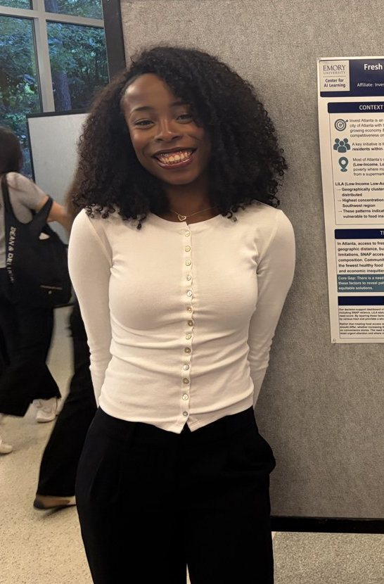

Savannah
✓ Verified humanData science at Emory · Atlanta, GA
Hiring me is like
Opening one of my Streamlit apps: you click once, then you can't stop clicking around.
Based inAtlanta, GA
SchoolEmory University, B.S. Data Science (Informatics track)
GraduatingDecember 2027
Works atInvest Atlanta, Data Strategy & Analytics intern
Looking forA summer 2027 internship in data, analytics or engineering

Green flag
Asking “who's actually going to use this?” before “which model should we use?”
Fit check
Internship edition. Business casual, still a little extra.
We'll work well together if
You send the dataset with a data dictionary. Bonus points for snake_case column names.
Hot take
A dashboard nobody opens is just an expensive screenshot.
My simple pleasures
A map that finally renders, and a lip combo that finally works.